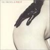

レディオヘッド
KID A。 ：先入観なしならレディへはこれが1番聴きやすくて良いです。
プライマルスクリーム
バニシングポイント。 ：BGMとして秀逸ではないでしょうか。
ビートルズ
ストロベリーフィールズフォーエヴァー。：サイケな曲がいいんです。
ナンバーガール
サッポロomoide in myhead状態 ：１８，９のときのことが痛烈に思い起こされます、自分的に。
ストーンローゼス
フールズゴールド。 ：鬱なときでも、外、歩いて行けます。
ヴェルヴェットアンダーグラウンド
ヴェルヴェットアンダーグラウンドアンドニコ。 ：ルー・リードのボーカルはカッコいいですね。そして、ウォーホールですよ。
|  |  |
 |
ストロークス
イズディスイット。 ：大都会で、真夏で、鬱屈と、アスファルトが、鳩が・・・・。
ニューオーダー
ブルーマンデー。 ：月曜日がイヤなのは人類共通です。
ニルヴァーナ
：基本ですね、まぁ。
ミッシェルガンエレファント
世界の終り。 ：パブなのと、こういうの、どっちもいいですよ。
R・E・M
オートマティックフォーザピープル。 ：超大物です。こういうボーカル好きですね。（アレな意味でなく）
マイブラッディバレンタイン
ラヴレス。 ：！？ド、ドラムが・・・。